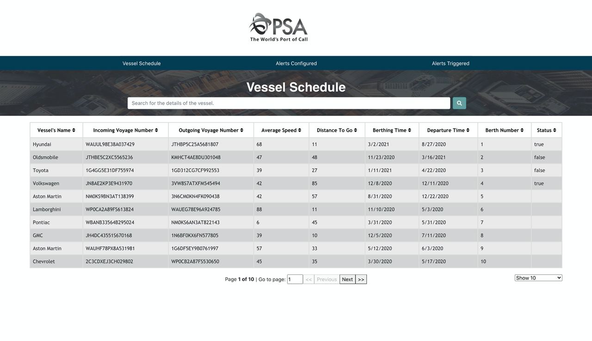
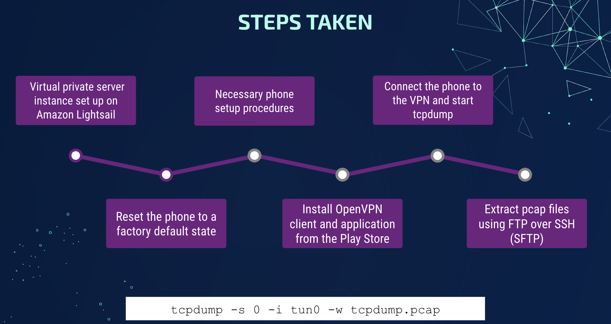

saFe-n-b | Web Application
- Developed a web application for businesses in F&B industry to aid them with their
operations in COVID-19 times.
- Web scraped latest COVID-19 regulations and statistics using jsoup and displayed
them in a dashboard
- Added employee management to allow businesses to track employees’ vaccination and
COVID test details

PSA Vessel Schedule Tracking | Web Application
- Developed a web application to allow PSA to track its vessels.
- Features include automatic scheduling of API calls, table sorting/ filtering, user
login and registration using JWT.
Jobility | Web Application
- Developed a prototype for a platform that bridges the employment gap for Persons
with Disability (PWDs).
- It uses AI technology to tailor the matching process between skillful PWDs and
suitable employers
- Features include a deep learning recommender, speech recognition and employee
leaderboard.

Portfolio Performance | Android Application
- Developed an Android application which downloads historical stock data from finnhub
for a given stock, persists it in SQLite database and calculates performance
metrics.
- Utilized various Android components, such as Activities, Services, Content
Providers, Broadcast Receivers and Intents
- Performed concurrency, synchronization and multithreading to optimize performance
and improve interactivity
Understanding Location-Based Recommendations | Data Structures Research Project
- Implemented unbalanced k-d tree, balanced k-d tree, and vantage point trees in Java
to find the list of businesses in the Yelp Business Dataset within a cutoff distance
from a given input coordinate.
- Thoroughly analysed the time and space complexities of the data structures; adapted
latest research on balancing k-d trees using recursive partitioning and presorting.

Behind the Scenes | Computer Networking Research Project
- Used Wireshark to evaluate the efficacy of Android’s restricting background network
activity feature.
- Ran tcpdump on a VPN server to capture network packet information; used iptables to
configure firewall rules to block destination ports 80 and 443; compared the network
traffic of common messaging applications
- Identified the servers messaging applications communicate with and frequency of
communication with server.
Self-Trained Knowledge Distillation | Deep Learning Framework
- Proposed a novel framework combining self-training with knowledge distillation for
semi-supervised few-shot classification. Experimented with various knowledge
distillation mechanisms.
- Evaluated the method on a popular few-shot benchmark- miniImageNet- and achieved
results comparable to state-of-the-art methods for semi-supervised few-shot
classification.
Data Modelling of Wine Quality | Machine Learning Model
- Built a multiple linear regression model to model the relationship between wine’s
chemical attributes and quality
- Performed EDA and correlation analysis for feature selection, 100-fold
cross-validation and subsequently sensitivity analysis to select the best models,
and clustering to further investigate the effect of features on wine quality rating
Sarcastic Headline Detector | Machine Learning Model
- Built a binary decision tree classifier with 91% ROC AUC score of detecting whether
a news headline is sarcastic.
- Used spaCy for natural language processing, scikit-learn to generate n-grams and to
train and evaluate multiple models, including Naıve Bayes, Logistic Regression etc.
Attendo | Android Application
- Developed an Android application which automates employee attendance tracking using
geofencing
- Used Java for backend, Firebase Authentication for user authentication, Firebase
Realtime Database to store employee and employer data, and radar.io API to integrate
the geofencing technology.